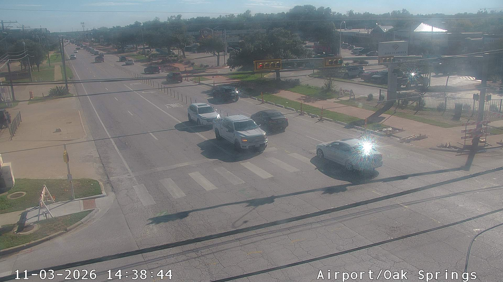
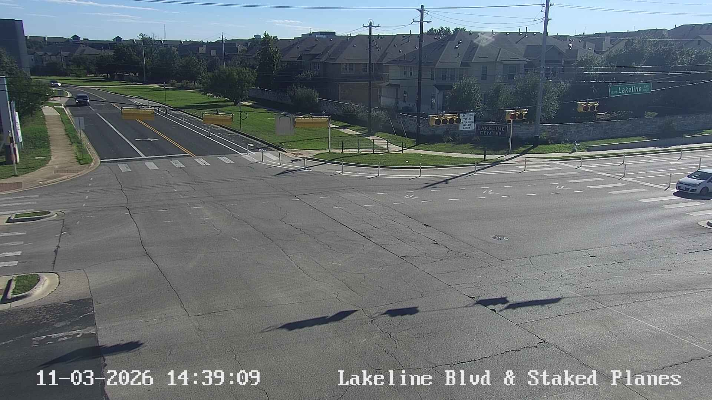

Discover still-image sources
Use Selenium and BeautifulSoup to inspect camera listings, recover camera names and identify public snapshot URLs. Preserve the source context while downloading the images into an organized collection.
I built Python workflows to collect public roadway-camera snapshots and extract frames from live video streams. The work combines browser-assisted source discovery, downloads and video decoding to create organized imagery that could later support labeling and computer vision research.

The problem
Camera imagery is useful for analysis only after individual sources can be discovered, retrieved and organized consistently. Still-image endpoints and live video streams require different acquisition methods, and a usable image collection must come before labeling or model training.
My contribution
I developed the Python acquisition workflows for still images and video frames. For TxDOT sources, I located camera names and snapshot URLs with Selenium and BeautifulSoup. For Jackson Hole streams, I used Streamlink to retrieve video segments and OpenCV to decode clips and save up to three JPEG frames per video.
Approach
Use Selenium and BeautifulSoup to inspect camera listings, recover camera names and identify public snapshot URLs. Preserve the source context while downloading the images into an organized collection.
Use Streamlink to access live video segments rather than treating a stream as a single image endpoint. Decode the retrieved clips with OpenCV and extract up to three JPEG frames from each video.
The original Baylor script preserves the OpenCV extraction approach. The reorganized script in the public repository uses FFmpeg for frame extraction, so the public refactor and original implementation are described separately.
A future detection workflow would organize and label collected frames, split data by camera and time, train a model and assess held-out scenes. Evaluation would include precision, recall, mAP and generalization across viewpoints, lighting and weather.
Result & scope
Repeatable Python workflows established the image-acquisition stage needed for a labeled visual dataset. The project demonstrates collection and organization of imagery; it does not report a trained vehicle detector or object-detection results.
Learning & progression
Data acquisition and model evaluation need to be designed together. Source identifiers and capture context help make future camera-based and time-based holdouts possible, while separating still images from streams avoids forcing different sources into one fragile collection method.
Evidence & technical detail
Expand a section to see methods, figures or detailed results. Select any figure to view it at full size.
Each image shows a different Austin roadway or intersection. Together they illustrate the variety of scenes a still-image collection workflow must handle.




The methods differ by source format and implementation stage.
| Source or version | Acquisition method | Output |
|---|---|---|
| TxDOT still-image sources | Selenium and BeautifulSoup discovery, followed by image download | Named camera snapshots |
| Original Jackson Hole workflow | Streamlink segments and OpenCV decoding | Up to three JPEG frames per video |
| Reorganized public script | FFmpeg frame extraction | Extracted image frames |
Collect frames, label objects, split by camera and time, train a detector and review held-out errors. Any conceptual bounding box shown in earlier project material was manually added to explain this future workflow, not produced by a trained model.
Related work
Independent researcher & developer
I am developing a reproducible Sentinel-2 workflow to study urban growth in Quito’s eastern valleys. Current work covers imagery acquisition, temporal compositing and spatial mosaicking; a Tumbaco pilot provides the foundation for planned built-up land segmentation, change analysis and independent validation.
Python data-pipeline developer
I developed Python workflows to extract and standardize EPA greenhouse gas reporting data for 2010–2024. API-derived facility tables, FLIGHT classifications and identifier-based reconciliation were combined into reusable CSV outputs, moving from exploratory browser automation toward repeatable facility-level data preparation.
Creator & sole developer
I conceived, designed and developed a web application connecting architectural plans with Quito property data. As its sole developer, I built the interface, Python APIs, municipal data integrations and interactive document tools, creating a workspace for renovation planning, measurements and spatial property analysis.
Let’s connect
I’m interested in work that connects analytical depth with useful implementation.